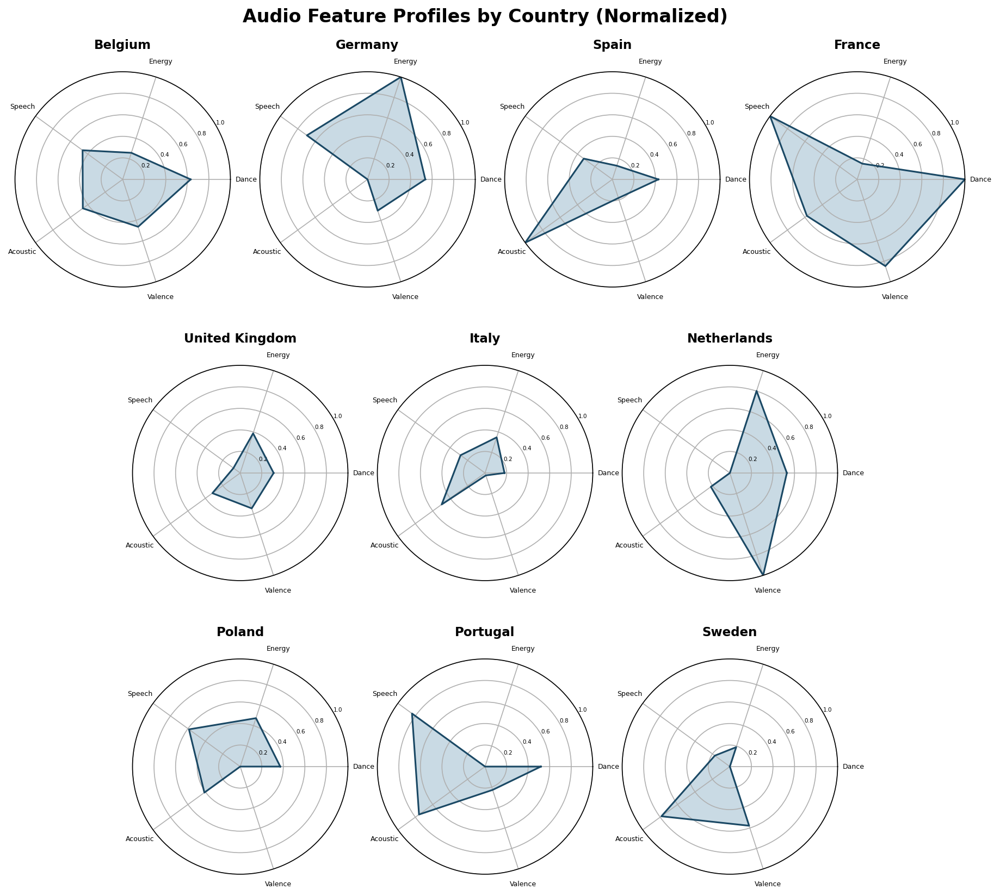

Instructions: This visualization is static. Each radar chart shows the average audio feature profile for a single country. The axes represent danceability, energy, speechiness, acousticness, and valence. Values are normalized from 0 to 1 across countries, where 1.0 means the highest average for that feature and 0.0 means the lowest. A larger filled area indicates a country scores higher relative to the others. Compare shapes across countries to see how their music tastes differ.

Description: The radar chart displays the normalized average audio feature profiles for each of the 10 European countries in a small multiples layout. Since this is a radar chart, the graph uses filled polygonal shapes as marks to represent the data. For channels, the graph uses position along each axis to encode the normalized value of danceability, energy, speechiness, acousticness, and valence. Values are normalized from 0 to 1, where 1.0 represents the highest scoring country for that feature and 0.0 represents the lowest. From the radar charts, it can be observed that France has a distinctive shape with high danceability and speechiness, while Spain stands out with high acousticness. The Netherlands shows high valence and energy, creating a more balanced shape. Sweden and Poland have smaller, less pronounced shapes overall. These differences in shape across countries illustrate how each country has a unique audio fingerprint in their popular music.